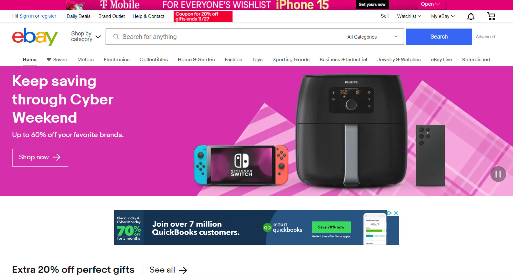
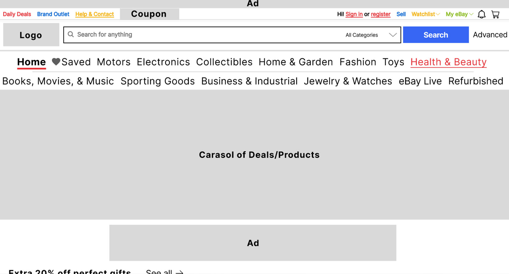
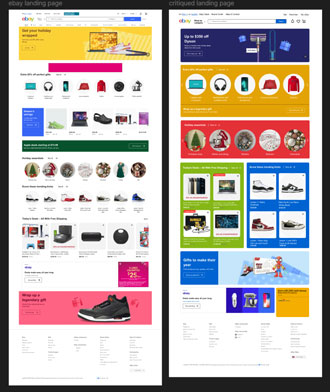

For a human-computer interaction class, I worked with 4 team members to redesign a website. This 3 week project focused on websites that failed many design principles that were introduced in the class. We chose to redesign eBay because, as a whole, the website is overwhelming and does very little to help the users navigate around. The team first worked individually before coming together on Figma to fix the design problems in eBay’s layout.
From our research, we found that eBay has been around since 1995. A lot of the old designs were clunky and distracting making them quite bad for most users. While the current website is much better than the first one, it still fails to meet the design criteria successful products need. Considering its age, I chose to center my design choices around those with poor eyesight as that seems to be the trend of improvement for eBay.
Individually, we created prototypes based on our own intuition before coming together to combine the best features. My prototype focuses on making items more visible. Following my target audience, I made the decision to increase the text size and add more color to make sure everything can be seen. I also rearranged the layout to match the average shopping website. When all team members finished, we brought our designs together to find the best features.
Below, I featured both the original website and the team’s redesign. We all came to the consensus that the text size was too small and the entire website was overwhelming to look at. For the sake of information hierarchy, we put all the products into their own boxes to give the users an easier viewing experience. We also utilized features eBay already had. They put some of their products in boxes. so we just made sure all the products were in boxes. This way, the overall design was much more concise and less overwhelming to look at.
Given more time, I would have loved to redesign the footer of the page. While it is the standard footer, I wish we also made the text larger for viewing ease. I feel like we neglected the footer even though it is a major part of the website. Despite that, I believe the team did an excellent job redesigning the website.